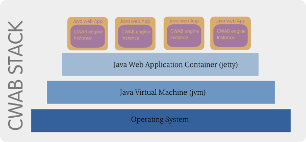

Crudzilla Web Application Builder (CWAB)
User Guide
Please read the CWAB technical document before attemping to use this guide. The technical document provides an introduction to the CWAB platform and its design.

Navigating Application Resources
Navigating application resources in the CWAB environment involves navigating file system resources and database resources.
Apps & Assets
This tab is used for navigating file system resources. Specifically the CWAB developer environment application has an asset directory where all items that can be worked on in the CWAB developer environment are stored. This includes all applications.
The actual location of the asset directory is cwab-dist/crudzilla-apps/crudzilla.
Various Menu Action
Depending on the type of resource you right-click on, any number of the following actions maybe be avaialble in the resulting context menu.
- New - creates a new resource
- Folder - create new folder
- Web App - creates a new Java web application
- Web Resource - creates one of the following file types.
- Javascript
- Markdown
- Html
- CSS
- XML
- Java
- Crud - create one of the following crud types
- Instantiator
- DataStatement
- ScriptExecutor
- HttpConnector
- FileUploader
- EmailSender
- Application Object - create one of the following
- NVP Processing Type
- Crud Type
- Data Source - datasource for connecting to database
- Transaction - create a jdbc transaction
- CodeMirror Mode - create a new CodeMirror editor mode
- Logger Config
- Web App - web app configuration object
- User Identity - user identity object
- Data Modeling
- Generated Column Type
- DataTable Column
- Generate DataTable
- DataModel
- Generated DataTable Strategy
- DataModel Field
- Generate Columns
- DataTable
- Add - upload a file to the asset directory
- Copy - copy an item in the asset directory
- Paset - paste an item in the asset directory
- Rename - Rename an item in the asset directory
- Delete - Delete an item in the asset directory
- Refresh - Refresh an item in the asset directory, when it is a a folder the following options are available
- Instantiator - refresh only Instantiators
- DataStatement - refresh only DataStatements
- ScriptExecutor - refresh only ScriptExecutors
- HttpConnector - refresh only HttpConnectors
- FileUploader - refresh only FileUploader
- EmailSender - refresh only EmailSenders
- All - refresh all cruds regardless of type
- Delete Web App
- Clone Tree - opens a new tab with a clone of the asset directory try for easy drag-n-drop
- Backup - add item to backup
- To Source - transform crud to source form for editing
- View - view html/crud in wysiwyg editor
- Test - runs a test
- Build - builds a build.xml file
The Crudbase
This tab is for navigating the crud database. All crud definitions are stored in a database and all alterations to crud definitions are against this database. This database has a taxonomy layered on top of it which allows for interacting with, and manipulation of the crud database in a manner similar to a filesystem. In other words the items on this tab are not on the file system but in a database.
This is an embeded derby database cwab-dist/derby/crudzilla
Various Menu Action
Depending on the type of resource you right-click on, any number of the following actions maybe be avaialble in the resulting context menu.
- New - create one of the following
- Category - create a taxonomy category node
- Instantiator
- DataStatement
- ScriptExecutor
- HttpConnector
- FileUploader
- EmailSender
- Application Object - create one of the following
- NVP Processing Type
- Crud Type
- Data Source - datasource for connecting to database
- Transaction - create a jdbc transaction
- CodeMirror Mode - create a new CodeMirror editor mode
- Logger Config
- Web App - web app configuration object
- User Identity - user identity object
- Data Modeling
- Generated Column Type
- DataTable Column
- Generate DataTable
- DataModel
- Generated DataTable Strategy
- DataModel Field
- Generate Columns
- DataTable
- Add Crud - show search tab for search and drag-n-drop of cruds.
- Clone Tree - clone crudbase tree for easy drag-n-drop operations.
- Rename - rename category or crud
- Delete - delete category or crud
- Bake - bake a crud/category of cruds, ie make a crud definition executable.
- Clone - clone this crud
- Bake - baking turns a crud definition in the crudbase to an executable file on disk.
- Delete - delete crud from taxonomy and crudbase
- Test - test crud
- Unlink - remove crud from taxonomy but don't delete from crudbase.
Note that all actions in the crudbase should happen in the context of an application. Meaning categories and cruds you create and manipulate must ultimately be along a valid application path that mirrors the application path in the asset directory.
Creating cruds and categories that don't map to an existing application is likely to create problems because the CWAB platform assumes all cruds belong to an application.
Creating A New Web App.
-
If you want authentication tables to be generated for this app then check the box.
Checking this box will enable authentication for your new app. The directory
securein your new app directory is the default secure directory of your application. You can edit yourweb.xmlfile to chose different security settings.
The default login isdeveloper/developer -
You have two database choices when setting up authentication
-
You may specify a datasource for an already existing database.
If you want to use a database such as mysql, oracle..etc, you'll need to first define a DataSource object.
To create a DataSource object for your application, because your application doesn't exist yet and all cruds are required to be executed within the context of an application, you'll need to create the initial DataSource object under
com/crudzilla/HiveMind/web/datasources.Right-click on this folder==>New==>Application Object==>DataSource.This would allow the DataSource object, which is an Instantiator, to be invoked in the context of the developer application. After the app is created you'll have to move the DataSource object to an appropriate location in your new Applicationwebfolder.If you have created a DataSource object for your new application, then darg-n-drop a refrence on the form above. Note that this Database must already exist.
- You may choose to have CWAB create a Database for you. If you choose to create a database, then an embeded derby database is created, this database would not require authentication. See derby documentation for details.
-
You may specify a datasource for an already existing database.
-
If you only specify a name and no DataSource, the App would be generated without authentication enabled.
You'll then need to manually enable authentication via edit of
web.xmlandcwab-dist/etc/<APP-NAME>.jdbc.properties
Note: Creating a new app currently can take up to a minute or two. This is because taxonomy operations that include generating boilerplate artifacts are inherently inefficient. Future improvements will be made to make this process a bit faster. This should however not be a problem given that creating new apps is not a frequent occurence.
When the app is created, a set of file system assets are created. Crudbase items are also created and the taxonomy path of these items follows their file system counterparts. You may need to refresh the CWAB developer environment application to see the changes in the taxonomy. Again you should note that Crudbase taxonomy structure should mirror file system layout of your application. This means when you create cruds, they will be automatically placed in the right location on the file system when they are baked.
Understanding Cruds
As outlined in the technical document, cruds are the fundamental constructs that the CWAB platform operates on. They are the executables that power CWAB based applications. Crud definitions, which you can edit, are stored in the crudbase. When you save changes to crud definitions, they are "baked", meaning a JSON formatted executable file is created in the asset directory in a location that mirrors the taxonomy path of the crud definition.
The crud construct is supported by the following tabbed-based ui layout.
We'll examine the various tabs and learn how to use them.
PreExecution
PreExecution handlers are actions you want to happen before the primary action of the current crud can be executed. This occurs after security checks and NVP processing has been applied.
- Enable - check this to enable this handler. If unchecked, this handler is ignored and not invoked.
- Drop reference here - drag-n-drop the crud you wish to execute as part of the PreExecution process, this is optional depending on argument propagation options.
- Require True - check this if the handler crud invoked is required to return the value "true". If any other value is returned, then the primary crud execution would terminate and return the value.
-
Argument Propagation Mode - This controls how the argument map is propagated across crud invocations.
- pass map - selecting this passes the current map as a reference, meaning the current map could be altered by the handler crud invoked.
- pass all map values - selecting this propagates all values of the current argument map but not the map itself. The current map would not be altered by the handler crud invoked. Note, for values that are Java objects, they could be altered by the handler crud invoked.
- pass some map values - selecting this allows you to specify an Instantiator that will return the name/value of the argument map values that will be propagated. This is a way to restrict which current argument map values are propagated to the handler crud invoked.
- pass none - selecting this passes none of the current argument map's entries to the handler crud invoked.
-
Return Mode - The value selected determines what to do with return value.
- Ignore Return - selecting this would ignore the return value of the handler crud invoked.
- Save Return As Variable - Put return value from handler crud invoked on argument map. When selected, a field called "Save Return As Variable" is visible. Specify a variable name to be added to the current argument map that represents the return value of the handler crud invoked. The name can then be used in all places where argument map variables can be referenced.
-
Explode - selecting this, explodes the result of the handler crud invoked on the
argument map.
When this is selected, a field called "Selected Properties" would be visible, this is a reference to an Instantiator that would return the set of properties from the returned result to explode onto the current argument map. If the selected field isn't specified, all properties would be exploded.
Note that the return value of the handler crud invoked should be an object, in other words not a list.
PostExecution
PostExecution handlers are actions you want to happen after the primary action of the current crud has been executed. You can return the result from these handlers as your final return values instead of the results from the primary action.
- Enable - check this to enable this handler. If unchecked, this handler is ignored and not invoked.
- Drop reference here - drag-n-drop the crud you wish to execute as part of the PreExecution process.
- Argument Propagagtion Mode - same as in PreExecution
-
Return Mode - The value selected determines what to return as the return value of the primary crud.
- Ignore Return - selecting this would ignore the return value of the handler crud invoked.
- Return As Primary - selecting this returns the result of the handler crud invoked as the overall result of the primary crud invocation.
- Append To Primary - selecting this, appends the result of the handler crud invoked as a property of the primary result object of the primary crud invocation. When this is selected, a field called "Append As Primary Variable" would be visible to name the property to be appended.
- Append Primary - selecting this, appends the primary result of primary crud to the result of the handler crud invoked. When this is selected, a field called "Append As Primary Variable" would be visible to name the property to be appended.
- Return Variable - selecting this allows you to specify the name of a property on the argument map that should be returned as the primary result of the primary crud invocation. When this is selected, a field called "Return Variable" would be visible to name the property to be returned.
- Save Return As Variable - Put return value from handler crud invoked on argument map. When selected, a field called "Save Return As Variable" is visible. Specify a variable name to be added to the current argument map that represents the return value of the handler crud invoked. The name can then be used in all places where argument map variables can be referenced.
-
Explode - selecting this, explodes the result of the handler crud invoked on the
argument map.
When this is selected, a field called "Selected Properties" would be visible, this is a reference to an Instantiator that would return the set of properties from the returned result to explode onto the current argument map. If the selected field isn't specified, all properties would be exploded.
Note that the return value of the handler crud invoked should be an object, in other words not a list.
Error Handlers
Error handlers are a special type of PostExecution handler, if an error occurs and there is an enabled error handler, that handler would be invoked as the last action.

The argument map would have an ErrorWrapper object crudError
with the following properties
- exception - Java Exception object. can be null if error wasn't due to an exception.
- errorType - Error type can be of the following values
- access-control - when access fails to be granted
- parameterization-validation - when parameter validation fails
- primary - when an error occured during primary action, this could be an error in scripts, check exception log for further details.
-
errorSource - attempts to give a clue as to where in the crud execution the error occured.
The values can be one of the following
- validation - during parameter validation
- primary - during primary action execution
Execution
This tab represents the primary action of a crud. What is shown on this tab depends on the crud type.
For instance here we have a ScriptExecutor crud.
See the various crud type sections for details.
Parameters & Validation
This tab supports the NVP Processing for the primary crud. Please see section on NVP Processing for details.
Security
You can restrict access to a crud by user or by role. When user is specified then
httpRequest.getUserPrincipal.getName must be equal to the user name.
If role is specified then httpRequest.isUserInRole must return true when given the role name.
If both user name and role is specified then both must pass for access to be granted.
- Sever side only - check this if you only want this crud to be invoked from server-side operations, for instance by other cruds. This would prevent this crud from being invoked directly from a browser.
- Require All Roles - check this if you want all user identity entries to be evaluated. This will require the user to have all the roles listed, otherwise access isn't granted.
- User Identity - drop a refrences to a user identity object. You can have as many identity entries. Any entry to this list, automatically implies authentication is required. So for instances you can drop a user identity crud whose user and role entries are blank to indicate that only authentication is required.
Name-Value-Pair (NVP) Processing
- Name - The name of the parameter.
- Required - If checked, this parameter would be required on the argument map during execution of the primary crud. If it is missing an error would be returned and execution of the crud terminated.
- Final - If checked, this paramater's default value cannot be overwriten by a supplied value. This is good for holding configuration that you don't want users to alter.
-
Type - This represents the parameter type. If default value doesn't conform to the format
of this type, an error may be returned.
- crud - if you choose to evaluate a crud type, the value should be a path that is either
relative to the primary crud or an absolute path in relation to the application
crud home directory. In other words an absolute path isn't an absolute file system path
but rather a path that starts with
/relative to the application's crud home directory, specifically the directory pointed to by the servlet init parameter app-home. - json - if you choose to evaluate a json value, you may parameterize fields by
prefixing them with
:crudzilla_param<PARAMETER-NAME>where<PARAMETER-NAME>is the name of the parameter whose value should be used to initialize the given json field.<PARAMETER-NAME>doesn't need to be declared, it only needs to be on the argument map. - plain-text - if you choose to evaluate a plain text value,
string interpolation would be performed. ie CWAB would look for and evaluate occurences of
#{<EXPRESSION>}where<EXPRESSION>is any Java style expression, including variable access.
- crud - if you choose to evaluate a crud type, the value should be a path that is either
relative to the primary crud or an absolute path in relation to the application
crud home directory. In other words an absolute path isn't an absolute file system path
but rather a path that starts with
-
Validation - Click on this to reveal the various validation options. The validation options
are dependent on the type. Validation error codes are defined in
crudzilla-app-settings/validation-error-definitions. To see the error message structure simply run a test with the test console. - Default Value - This is the default value for the parameter. Depending on the type, the edit button may be used to edit the data.
-
Eval (l/r) - This option controls evaluation of the parameter name/value pair. If the first
checkbox is checked, the Name field is assumed to be an assignment expression to be evaluated, for
instance to assign the value to an array index. If the second checkbox is checked, the Default Value is
assumed to be an expression to be evaluated.
Expression evaluation includes crud invocations, in other words to invoke a crud and use the result as the value of a parameter, you must specify a type of "crud" and check the second box.
Similarly, to allow for json evaluation, a type of "json" must be specified and second box checked.
In general you can specify any Java style expression to be evaluated.
Generative Parameter Values
These are built-in generative constructs. When you use them as a value for a parameter and evaluate them, their values would be generated.
- crudzilla_next_insert_id - when used as a parameter expression or in a DataStatement,generates a uuid, this would be used mostly in DataStatements to generate ids.
- crudzilla_last_insert_id - this has the value of the most recently generated uuid and can be accessed from the argument map.
- crudzilla_generate_uuid - generates a uuid.
- crudzilla_current_timestamp - when used as a parameter expression or in a DataStatement, generates current time stamp in utc.
- crudzilla_current_timestamp_seconds - when used as a parameter expression or in a DataStatement, generates current time stamp in utc in seconds.
- crudzilla_current_timestamp_minutes - when used as a parameter expression or in a DataStatement, generates current time stamp in utc in minutes.
- crudzilla_empty_string - generate an empty string, by default if a value isn't specified for a parameter, its value is null.
- crudzilla_user - returns the user name of currently logged-in user, can be accessed from argument map.
Variable Selection
Variable selection is a mechnism that allows a parameter to get its value from another parameter
selected based on a switch value. An example of a variable switch value would be the value qa to indicate
that the parameter should get its value for the QA environment.
Variable selection can be setup globally via crudzilla-app-settings/system-settings with
an entry for parameter crudzilla_variable_selector_switches, or locally.
To setup variable selection.
-
By default your
crudzilla-app-settings/system-settingsshould have a global switch setup.crudzilla_variable_selector_switchespoints to the global application-wide switchescrudzilla-app-settings/variable-switchesand typically would look something like this.
Each entry represents a switch whose value would determine the value of selector parameters whose value depend on this switch. So for instance a parameter's value may depend on whether the language is English or French..etc
-
Set the value of the parameter whose value you wish to set based on a switch to
crudzilla_selector_<SWITCH-PARAMETER-NAME>where<SWITCH-PARAMETER-NAME>is a parameter that holds the switch value, in other words this parameter is the switch variable. For instance<SWITCH-PARAMETER-NAME>could contain one of the following values:- dev
- qa
- uat
- prod
Note that this parameter is an expression thus you should check the right expression box.
CWAB would first look on the current argument map for
<SWITCH-PARAMETER-NAME>, if it isn't found, then it will look at the application settings for the objectcrudzilla_variable_selector_switches. This object should have the application level switches. -
After obtaining a switch value, CWAB uses a prefix pattern to get the parameter's correct value.
What this means is that CWAB would look at the argument map for the value of a parameter called
<SWITCH-VALUE>_<CURRENT-PARAMETER-NAME>.<SWITCH-VALUE>is the value obtained from the parameter with name<SWITCH-PARAMETER-NAME>.<CURRENT-PARAMETER-NAME>is the name of the current parameter being evaluated. -
Variable selection may be setup locally, meaning without using the
crudzilla-app-settings/system-settingscrudzilla_variable_selector_switchesentry.Local setup is similar to global setup except the
<SWITCH-PARAMETER-NAME>would be on the current argument map.Above, the parameter
databaseUrlat run time would be set to the value of the parameterqa_databaseUrl, which is the valuelocalhost:3306/db1.If the switch variable parameter
environmenthad been set to the valuedevthen the resulting value would have beenlocalhost/derbywhich is the value of the selected parameterdev_databaseUrl.
Assigning Parameters to other Parameters
To assign a parameter to another, set the value of the parameter to
:<SOURCE-PARAMETER-NAME> and enable expression evaluation.
Note that the <SOURCE-PARAMETER-NAME> must be already on
the argument map, meaning it must be listed before the current parameter.
Note: Parameters are processed in the order they are listed (ie sequentially) so parameters that depend on the value of other parameters must be listed below those depended upon parameters.
Note that all parameters that are expressions must be final by default in order for parameter expressions to be evaluated. This is for security reasons, it prevents user supplied values from being evaluated. To override this behaviour see the configuration section.
ScriptExecutor
Above shows the code editor for a crud, the code editor depends on the language of the ScriptExecutor. When creating a ScriptExecutor, depending on the type you may have the choice to create a file on the disk. For instance velocity templates can be loaded from file sytem or the template may be provided dynamically.
When code is loaded from file, cruds are still the entry point to the code, in other words you can't invoke a velocity template directly, you must invoke the corresponding ScriptExecutor.
ScriptExecutor cruds have a number of native objects available to scripts.
- crud -
This object is used for invoking other cruds. It has the following methods:
- add
- call
- logger - see section on logging
The usage syntax of the crud object when calling other cruds is as follows:
crud.[add(<parameter-name>,<parameter-value>).]*call(<crud-path>[,<arguments-partial-clone>]);- crud-path: this is either a relative or absolute path of a crud, relative to the application crud directory.
- arguments-partial-clone: This is a HashMap object to be passed as an argument map for the call. If this argument is supplied, the parameters added via an add call will be ignored.
- crudzilla - This is an object that represents the current instance of the CWAB execution engine. It should not be used by a developer. future use maybe.
- httpRequest - HttpServletRequest object
- httpResponse - HttpServletResponse object
- arguments - Argument map as described above
- crudzilla_user - currently logged in user, if any
The file extension of ScriptExecutor is "ste".
DataStatement
Template
This tab contains the sql editor for entering an sql template. This template can include parameter specifications.-
DataSource - Drop DataSource definition object reference here. You can create a DataSource
object from the DataSource menu. The DataSource types are
jndi,jdbc-driver,datasource. If thedatasourcetype is specified, then it is assumed to represent ajavax.sql.DataSourceinstance. - DataModel Reference - This is a list of DataModel References to be used by the sql in this DataStatement. Please see section on DataModeling for a detailed description of this technology.
-
Transaction - An object that represents a JDBC transaction. Create a transaction by right-clicking
and selecting JDBC Transaction from the Crud Type submenu.
- none - do nothing
- start - when selected, this DataStament would start a new transaction identified by the transaction object.
- join - when selected, this DataStatement looks for the specified transaction and joins it.
- commit - when selected this DataStatement joins the specified transaction and commits the transaction after execution.
-
Dynamic Sql - A velocity template crud that contains the dynamic sql. When this is specified, the
sql in the editor of this DataStatement is will not be executed directly.
When using dynamic sql, the parameter
crudzilla_dynamic_sql_resultset_templatemust be set, this should follow the format of the "Compiled" sql...see the "Compiled" tab of a non-dynamic sql DataStatement for an example of what a resultset template must look like.If SQL is entered in the editor for a DataStatement, it will be available as a parameter
crudzilla_prepared_dynamic_sql_statement. -
ResultSet Processor - A ScriptExecutor crud that processes the JDBC ResultSet object that result
from running this DataStatement.
This is an advanced capability which gives the developer full control over the processing of the resultset from an executed query. The resultset is available on the argument map as
crudzilla_datastatement_resultset, this is a JDBC resultset object type.
Compile
This tab shows the compiled sql in the Template tab. All parameters are extracted and replaced with placeholders (?). This tab shows the Parameter List expected by this DataStatement and the ResultSet Template if this DataStatement returns values.
The platform parametercrudzillaResultSetFormat is available for use with DataStatements. The value
can be one of the following:
- bean - to return the result as a single object
- list - return result as a list. This is the default
- decorated - return the result with column information. The resulting object has the form
{"columns":[{"name","type"}],"rows":[{}]}.
DataStatements also support the platform parameter crudzillJavaLangClass.
Set this to the fully qualified Java class name if you want the resulting
data to be converted to a Java bean of the specified class type.
The platform parameter crudzilla_default_datasource should be set as part
of crudzilla-app-settings/system-settings to specify a default data source for
newly created DataStatements. This would be automatically filled in whenever a
new DataStatement crud is created. Most business applications only have a single
data source, so this would save the developer a few extra clicks.
Parameter Type Hinting
DataStatements support type hinting, this is useful for RDMSs that have strict type
requirements for prepared statement parameters. To specify a type simply enclose the
type in parenthesis following the parameter name.
The syntax is as follows: :<PARAMETER-NAME>(<SQL/Java-Type>)
When a type hint is supplied with a specified parameter,
the following additional parameters may be supplied.
- For types: BINARY, VARBINARY, LONGVARBINARY,CLOB,BLOB
-
Base64
- crudzilla_base64_format_<PARAMETER-NAME>_linelength
- crudzilla_base64_format_<PARAMETER-NAME>_lineseparator
- crudzilla_base64_format_<PARAMETER-NAME>_urlsafe
-
Base32
- crudzilla_base32_format_<PARAMETER-NAME>_linelength
- crudzilla_base32_format_<PARAMETER-NAME>_lineseparator
- crudzilla_base32_format_<PARAMETER-NAME>_urlsafe
- Binary
-
Hex
- crudzilla_hex_format_<PARAMETER-NAME>_charset
-
Base64
-
DATE
- crudzilla_date_format_<PARAMETER-NAME>
-
TIME
- crudzilla_time_format_<PARAMETER-NAME>
-
TIMESTAMP
- crudzilla_timestamp_format_<PARAMETER-NAME>
BLOB,CLOB
you may also upload files in place of data for these types, so for instance you may call a DataStament in a multipart http request that includes an image file to be stored in a blob. The types supported are either Java types or SQL types, in other words JDBC types.
Transactions
You must specify a unique name for your transaction object. The name must follow the java
identifier naming syntax. A running transaction can be accessed on the argument map as
crudzilla_transaction_<TRANSACTION-NAME> where
<TRANSACTION-NAME> is the unique name of the transaction.
The crudzilla_transaction_<TRANSACTION-NAME> object has properties
- transaction - a reference to the raw transaction configuration object, ie the Instantiator specified in the DataStatement.
- connection - JDBC connection object for the transaction
The file extension of DataStatement is "stm".
Instantiator
This crud type exposes NVP Proccessing result as objects. By default it will return a generic
java bean. If the platform parameter crudzillaJavaLangClass is supplied, the object is of this type. The
screenshot below shows the application settings for CWAB developer environment application as an example.

FileUploader
Properties
- destDir - where to upload the file, by default it is
., meaning the working directory of the crud. - autoGenName - set to
trueif you want an auto generated name for uploaded file - useName - a name to use for uploaded file, if not specified and name is not auto generated then the original file name is used.
- namePrefix - a prefix for auto generated file names.
- sizeLimit - file size limit for uploaded files.
- mime - mime type of uploaded file.
- enableUnpack - set to true if you want to unzip uploaded zip files.

Note, you must set crudzilla_temp_upload_directory in crudzilla-app-settings/system-settings
before doing file uploads.
HttpConnector
Properties
- url - url to connect to.
- headers - header for request. This can be a crud that returns the header object or a json defining header object. Note the header object is a single object with name/value pairs.
- loginUserId - user name for http authentication.
- loginPassWord - password for http authentication.
- authenticationHost - this is option as it will be extracted from url if not specified
- authenticationPort - similarly optional if url will be used for authentication.
- authenticationType - This can be
- NONE - no authentication
- FORM - for form based authentication.
- PREEMPTIVE-BASIC - Authenticates before making the url request. basic authentication.
- PREEMPTIVE-DIGEST - Authenticates before making the url request.digest authentication.
- maxFileUploadSize - maximum upload size if this is a multipart request.
- authenticationRealm -
- authenticationScheme
- basic
- digest
- postDataSourceType - for multipart request, this specified where to get files from
- DATAFROM-HTTPREQUEST - when the files are uploaded as part of a browser based upload.
- DATAFROM-FS - Use this if you want data to comre from file system.
- postDataFileItems - json array of objects of the form {"path","paraName"}. path is the local file system path of the file to upload and the paramName is the http parameter name to use for this file.
-
method - http method
- HTTP_GET
- HTTP_POST
- HTTP_POST_MULTIPART
- HTTP_POST_CHUNKED
- mime - for chunked post, what is the mime
- type - not used
- formPageUrl - url for form if form authentication is used.
- authenticationUseridParamName - form user name http parameter name.
- authenticationPasswordParamName - form password http parameter name.
- callParameters - This can be a crud that returns the parameters object or a json defining the parameters object. Note the parameters object is a single object with name/value pairs.
Return value
The return value for this crud type is an object with the following structure :
- headers - the headers returned by the request.
- statusCode - the http status code
- statusLine - the http status line text
- response - the response body of the request
The file extension of HttpConnector is "svc".
EmailSender
Properties
- host - The smtp host name.
- smtpPort - smtp port.
-
sslEnabled - set to
trueif you want ssl enabled - dataSourceURI - this is for embeded images.
- loginUserId - login username for smtp server.
- loginPassWord - pass username for smtp server.
- messageTemplate - this can either be html text, plain text or the url of a crud that will generate the html. when it is a crud url, it must be evaluated and the return object must be a string.
- alternativeTextMessage - this can either be plain text, or the url of a crud that will generate the html. when it is a crud url, it must be evaluated and the return object must be a string.
- bouncedMessageAddress - for bounced email.
-
bcc - a json array of objects of the form
{"emailAddres","name"}, name is optional. - cc
-
replyTo - a json array of objects of the form
{"emailAddres","name"}, name is optional. -
headers - a json array of objects of the form
{"name","value"} - type - for html email value is HtmlEmail, for text use SimpleEmail.
-
from - a json object of the form
{"emailAddres","name"}, name is optional. -
to - a json array of objects of the form
{"emailAddres","name"}, name is optional. - subject - text of subject line
-
attachments - a json array of objects of the form
{"path","name","description","url"}. path or url is required, all other fields are optional.
The file extension of EmailSender is "esd".
Testing Your Application
Testing your application involves testing cruds. To test a crud your can right click the crud and select Test. You can also test from the App Assets tab by right-clicking on the crud executable and selecting "Test Run".- Output format - select the expected result type.
- JSON - for JSON data.
- Html Page - If you want the result to open in a new browser tab and an html page.
- Text - if expecting plain text
- Ignore - check this if you don't want the parameter sent to the crud being tested.
- Name - parameter name
- Value - parameter value
Simulate
When you simulate a crud, the crud is run in the context of a CWAB engine instance that attempts to simulate the instance that will be running in your application. You simulate if your app isn't running or if you want to test a crud that requires authentication but you would like to bypass the authentication for the purpose of testing.
Run
When you run a crud or any other static asset, the test invokes a url directly against a running app. In other words when you run a test, it is assumed that your app is running at the url specified in the app context.
Programming CWAB
The CWAB developer environment is self-referencing, what this means is that CWAB is used to build CWAB, similar to how eclipse or netbeans may be used to build new versions of themselves. There are a number of functionality in CWAB where you directly alter the functionality by modifying certain cruds.
Adding CodeMirror Modes
CodeMirror is the editor used for coding in CWAB. You can add aditional editor modes to edit text files. Adding new modes involves the following steps
-
Current modes are defined in the folder
com/crudzilla/HiveMind/web/editor-mode-definitions. Navigate to crudbase and open this folder. - Create the new mode via right-click==>New==>ApplicationCrud==>CodeMirror Mode.
- Fill out the mode fields, see other modes for examples.
-
Map mode to an extension by adding an entry to the
com/crudzilla/HiveMind/web/editor-mode-definitions/codemirror-editor-ext2modesInstantiator. -
To add a new mode to the Web Resource menu, add an entry for the new mode to the
com/crudzilla/HiveMind/web/editor-mode-definitions/editable-typesInstantiator. - When you refresh, if you added a menu item then the new mode will have a menu item and you should now be able to create files of this mode.
Adding new loggers
You can add logging from additional classes that you may have in jar components. This can be done both for CWAB and your own apps, so if you are building or using a Java component that is packaged as a jar and deployed with your web app, you can access the log output from classes in such a component in the CWAB developer environment log-viewer by configuration.
-
Every app created in CWAB has a folder
dev-logging/classesin the base folder of that application. By default this folder has configuration for logging from the crud execution engine. Navigate to crudbase and open this folder to add new log configurations. - Create the logger config via right-click==>New==>ApplicationCrud==>Logger Config.
- Fill out the mode fields, see other logger configs for examples.
-
To enable logging from this newly added class, open the
dev-logging/classes/class-listInstantiator and add an entry for the newly added class logger config. - You'll need to restart CWAB for this to take effect.
Altering App configuration
When you create a new app a new configuration is created to register that app with CWAB.
This configuration is the same as the object created if you right-click a folder
New==>Application Crud==>Web App.
All app configs are stored in folder com/crudzilla/HiveMind/web/new-web-app/app-list.
They have the same name as the app and they are registered by addng an entry to
com/crudzilla/HiveMind/web/new-web-app/app-list/apps.
The contextPath propertie is important as it points to the url of the app and this is used for testing
cruds that belong to this app and also for the logviewer feature to work correctly.
Adding new users to your CWAB installation
Access the "Application Menu" to open the user management utility.
You can also run the set of cruds in the folder com/crudzilla/HiveMind/web/user-identity to implement additional user management features.
The DataStatements are sufficient for adding and removing users. You may also build your own UI on top of these.
Data Modeling
Data modeling makes use of Database Table and Column Pooling (DTCP) technology introduced in CWAB.
Ordinarily when you want to add a new data model to your application, you create a table to represent the model and add columns to represent the fields of that model. What the CWAB DTCP technology suggests is to use the database table and columns as storage devices instead of modeling constructs.

The data modeling technology built into CWAB allows you to create DataModels in CWAB and map them to database tables and columns. When you use CWAB data modeling, you view the database tables and columns in your application database purely as storage devices. When you want to know what your actual data models look like you'll look at your CWAB DataModels not your database tables and columns.
Note that this is still an experimental technology.
Creating Database Table and Column Pooling (DTCP) tables
The first step towards data modeling in CWAB is to create the pooled database tables. This means creating one or more database tables each with its own pool of columns of various sql type distributions.
Below is an example of what a pooled database table looks like, note the distribution of sql types. It is up to you and your need to decide what the sql type distribution should be for your DTCP tables.
You should view a DTCP table as a large matrix that holds data. The data modeling in CWAB provides the mechanism to make sense of the data in the matrix.
Generating DTCP table sql create statement.
To generate the sql shown above, you need to create a generation strategy.
Note that all
steps outlined below are optional, you can use any other means to create a database table
with a pool of columns of various sql types. The generation facility provided by CWAB is only
for convenience but not required.
- Create a folder, where your strategy information would be stored.
-
For each sql type you wish to create columns for, create the generated column type. From the Data Modeling menu:

-
Fill out the Generated Column Type. The count is the number of columns of this type that should be generated.

-
Create an Instantiator and list the created types in it. Make these types executable.

-
Create a "Generated DataTable Strategy" ... this should point to the list in the step above.

-
Fill out the strategy fields.

- columnTypes - Specify the path to the type list created above.
-
createDataTable - Specify a dynamic DataStatement that would accept the generated
create table sql and execute it. This DataStatement should expect a
parameter
sqlwhich is the sql we are going to generate. - -OR-
- dataSource - Alternatively, you can simply specify a DataSource against which the generated sql must be executed, CWAB would take care of executing it.
-
CWAB provides a simple tool for generating the necessary sql statements for creating DTCP tables. You can access the DTCP generator from the Application menu.

-
DCTP table Generator Tool

- Drop a reference to the strategy created above
- Click the Generate the button to generate the create statement sql template, change the name of the table you wish to generate
-
Click the Create button to run the generated statement.
Note that this is optional as you can just run the generated sql in an sql client of your choosing against your application database.
Create DataTable Object.
After creating a DTCP table as outline above, you need to create a corresponding DataTable object in CWAB that will be used to map DataModels to the actual database table.
-
Create a folder, this folder should have the same name as the DTCP database table it represents. The DataTable object should be called
datatable. -
Fill out the fields of the DataTable created above.

- crudzillaJavaLangClass - The crudzillaJavaLangClass is used internally, do not edit.
- dataSource - Provide the DataSource/database to which this DataTable database table belong.
- name - Provide the name of the actual DTCP table created above.
- typeColumn - This is the column object that will be mapped to type fields of DataModels
Generating DataTable Columns.
After creating a DataTable object as outline above, you need to create corresponding column objects that will be used to map DataModel fields to actual database table columns.
-
Under your DataTable object folder create a sub-folder called
columns. -
Right-click on the columns folder and navigate to the Data Modeling menu and select "Generate Columns".

- Drop a reference to the DataTable created above.
-
Click the "Generate" button to get the available columns from the DTCP database table created above.
- Select the column objects you wish to generate, generally you'll select all.
- Click the "Create" button to generate DataTable Column objects in the folder you right-clicked on above.
-
This will create DataTable column objects that you are going to use for mapping to DataModel fields.
The column objects generated will be named following the convention
<DTCP-table-column-name>-<sql-type> -
You shouldn't have to edit the generated column objects.

Creating a DataModel
We now need to create the actual DataModels that will represent our application data models such as say customer, order, inventory...etc.
The first step in creating a DataModel is to determine a namespace for the model. Because you are going to be storing instances of numerous models in the same DTCP database table, you need a way to uniquely identify rows that below to a particular model. The proposed approach is to use the java package naming convention as a way to create namespaces.
So for instance a DataModel called customer could be stored in the crudbase as
com/crudzilla/crudzilla-website/data/customer.
This path which is relative to the application base directory then becomes the type
identifier for all customer rows.
The path can be relative to any folder, as long as it is likely to be unique across any number of different DataModels, this would be sufficient to uniquely identify a given DataModel type.
There should be a field that all DataModels have that specify what their type namespace is.
The field name should be crudzillaType and it should have the namespace value for all instances of the
DataModel.
Automatic approach
The easiest way to create your Data Model is to use the DataModel creation tool:

Select a DTCP table (aka WideTable) to map your model to and then fill in the fields and their corresponding column mapping.
Manual approach
- In your namespace folder, create a folder to hold your DataModel.
This folder should have the name of your DataModel that you'll use in your sql statements,
for instance
customer -
Right click on the folder and navigating to the Data Modeling menu to create a DataModel object.
The DataModel object should be called
datamodel. -
Fillout the DataModel object.

- crudzillaJavaLangClass - do not use, used internally.
- fields - path to the field list of this DataModel, this should be
fields.ins - name - name of DataModel to be used in DataStatement sql, that is name of the folder created above.
- dataTable - path to DataTable object created above, this establishes the connection to actual DTCP database table.
- typeIdentifier - type namespace of this model, this will be used internally by CWAB for certain tasks.
Creating DataModel Fields
-
Under your DataModel folder, create a sub-folder called
fields. -
For each field of your DataModel, right click on
fieldsfolder and create the DataModel fields by navigating to DataModel Fields menu. -
Fill out the DataModel Fields.

- crudzillaJavaLangClass - should not be altered, it is used internally.
- column - drag-n-drop one of the column objects that were generated earlier. The value should be the path to the draged-n-droped column
- name - name of the field. This would be used in all sql statements to reference this field.
- useAsLabel - set to true if the name should be automatically used as the label for the mapped column in instances where the AS clause isn't used in sql select statements.
-
Under the DataModel folder create an Instantiator list to hold the fields, this object should be called
fields. You must add all the fields your created above to this list.
Create DataModel reference
A DataModel reference is an Instantiator list of DataModels that have been defined as required above. You create any number of references depending on which DataModels you want to use. These references would then be dropped on the appropriate DataStatement that uses them.

DataTable Summary
DataTable layout
Your DataTable should be layed out as demonstrated below. Below the columns
folder contains DataTable column objects generated as outlined above.
Note DataTables
need not follow the Java naming convention, however you should organize all your
DataTables in an appropriate manner.

Simplified steps for creating a DataTable
- Create a folder with the same name as your DTCP table.
- Under this folder, create a DataTable object and it should be called
datatable. - Fill out the fields of
datatable - Under the DataTable folder create a sub-folder called
columns - Right-click on the
columnsfolder, and generate the DataTable column objects
DataModel Summary
As further clarification, when you are done with the steps outlined above your crudbase should have the following layouts.
DataModel Layout
The following diagram shows what the layout for a typical applications DataModel should be. In this diagram we see a DataModel for customer.

Simplified steps for creating DataModel
- Create a namespace that follows java package convention.
- Create a folder under the right namespace with the name of your DataModel
- Under this folder, create a DataModel object and it should be called
datamodel. - Under this folder, create an Instantiator called
fields - Under this folder, create a sub-folder called
fields - Under the sub-folder
fieldscreate your DataModel Field objects - Make sure there is one field called
crudzillaType - Fill out all fields for your DataModel fields
- Add the crud path in the
fieldsInstantiator for each DataModel Field and make sure evaluation is enabled for each entry.
These layouts together describe what a DataModel in CWAB looks like.
Backing up your work
It is highly recommeded that you run a regular backup of your work. CWAB supports backing up both your file system resources and your crud database.
To add a folder or file to backup, right click and select backup. To run a backup select Run Backup from Application menu. Note that adding a file or folder to backup is not the same as running a backup.
The backup resources are all stored in your asset directory in the
folder crudzilla-backup-snapshots.

Note that these backups are local, meaning if the computer on which CWAB is running suffers disk failure for instance, then you may lose all your work including backup. To address this problem you should probably setup some sort of additional backup to save your backups in other places, such as in the cloud, google drive, github..etc.
Crudzilla will offer a cloud backup service in the near future.
Logging
CWAB supports logging during development. See section on Programming CWAB for steps on how to configure logging.
You can view log output for an application that is currently running from the application menu.
Note that to configure production logging for your application, you'll need to integrate your preffered logger and configure it. The logging in the CWAB development environment is for development only and isn't persisted to disk. The CWAB development environment uses log4j, you may setup something else for your production use.
Within ScriptExecutors the crud object has a method logger() for logging.
It returns the apache commons logging org.apache.commons.logging.Log object.
Configuring Crud Applications
You set application configurations via entries in crudzilla-app-settings/system-settings.
You need to specify the base directory of your application assets including cruds.
There are varous directories that can be set.
By Default these are set to the asset directory sub-directory that
your application is created in, that is the crud home of your
application (<path-to-your-app-directory>/web).
You should only need to
set most of these for production deployment, not during development.
- crudzilla_static_file_base_dir - Where static resources such as html, javascript,image and css files are stored. You may leave this blank in which case the app-home servlet init parameter value would be used.
- crudzilla_monitor_crud_changes - points to configuration for crud file change monitor for hot swapping of cruds.
- crudzilla_velocity_template_root - This is the base directory for the Velocity template engine, Velocity would look in this directory for template files. You may leave this blank in which case the app-home servlet init parameter value would be used.
- crudzilla_serve_static_content - set to
trueto enable the serving of static resources. It is true by default. - crudzilla_engine_startup_handler - pointer to a crud that should be run whenever the CWAB middle-ware layer is initialized.
- crudzilla_asset_base - This simply states how many levels up from the developer studio application executable resource directory is the asset directory. This should not be modified, it used internally.
- crudzilla_welcome_files - comma seperated list of default directory files.
- crudzilla_url_mapper -
Points to an Instantiator that replaces a native crud url with a user-friendly version.
Each parameter entry represents one such mapping.
The name of the parameter would be the user-friendly alias while the value has the actual crud path.
Note that this must be a map, in other words the Instantiator pointed to must have the parameter
crudzillaJavaLangClassset tomap. - crudzilla_interceptor -
a crud that serves as a central controller for all requests
to the CWAB middle-ware. Set this if you want control over all
requests to your application. The argument map will have a variable named
crudzilla_requested_resource, this holds the actual request resource path. - crudzilla_temp_upload_directory - temp filesystem location for file uploads.
- crudzilla_http_output_mime - set the global mime type for velocity templates.
-
crudzilla_http_passthrough - set to
trueto allow velocity templates to stream output directly tohttpResponse, this is default behaviour. - crudzilla_default_datasource - set this to the path of the default DataSource object for DataStatements.
- crudzilla_variable_selector_switches - see NVP Processing section for details on Variable Selection.
- crudzilla_user_profile_initializer - path to a crud that will return a user profile object, see User Profile section.
-
crudzilla_evaluate_user_supplied_values - default is
false. set totrueif you want to enable expression evaluation on parameters whose values may have been user supplied. By default all parameters with their eval checkboxes checked are required to be final otherwise the evaluation would not be performed, set this parameter totrueto override this default behaviour.Note setting this to
trueis a potential security risk.
app-home is set in your application's web.xml file, by default it is
a relative path, ie relative to the asset directory which is cwab-dist/crudzilla-apps/crudzilla.
You may also specify an absolute filesystem path for app-home.
User Profile
The CWAB platform provides a mechnism that makes it easy for your application to use elements in a user's profile. A user's profile is simply imformation about the currently logged in user, this can include name, contact information and any other information that you want to associate with a user's profile in an application.
In your crudzilla-app-settings/system-settings, set the parameter crudzilla_user_profile_initializer to
a crud path that returns the user profile object. For instances this can be a DataStatement
that uses the crudzilla_user argument map property to lookup the id of
the user which can be used to associate the user with elements in a multi-user application.
You can certainly get your user profile information ondemand, ie at the moment you need it in your application, however this mechanism allows you to setup user profile retrieval once and then easily use elements of the profile all over your application.
All elements of the user profile can be accessed in your application using the name pattern
crudzilla_user_<ELEMENT-NAME>, where <ELEMENT-NAME> is
a property in the user profile object returned, such as id.
The user profile object is stored in the http session(httpRequest.getSession()) as crudzilla_user_profile,
to invalidate this object, simply remove it from the session, it will be reloaded next time
a user request is processed. You may also manually [re]load it by setting the session attribute.
Note that the argument map property crudzilla_user
is assumed to be the way you identify a user's profile. This property is available once a user
is authenticated.
Application Startup
When the CWAB engine is started, you can register a handler to be called. This can be any crud type though it should be a ScriptExecutor that will take care of startup tasks such as setting up logging.
In your crudzilla-app-settings/system-settings, set the parameter crudzilla_engine_startup_handler to your startup
crud path.
Note, this parameter should not be evaluated, just the path to the crud is required, the engine will
execute it once full engine setup is complete.
Deploying Crud Applications
The CWAB product is built on top of the jetty container. When you are building your application it will be running in jetty. You can deploy your finished application to another application server of your choice though the existing setup is recommended unless there is solid reason to use a different java appserver/container.
The key jar dependencies are outlined as follows.
-
cwab-dist/lib/ext/crudzillacontains all crudzilla dependent jars. -
All jars in
cwab-dist/lib/ext/crudzilla/coreare required to run crud applications except- ant.jar - required for development only unless you want to use ant in prod.
- ant-launcher.jar - required for development only unless you want to use ant in prod.
- log4j.jar - if you are not using log4j in prod then you must include your preferred logging implementation.
-
In
cwab-dist/lib/ext/crudzilla/jvm-language-supportthe required jars are- commons-jexl.jar - jexl language support.
- groovy-all.jar - groovy language support.
- velocity.jar - velocity template support.
The jars below are required if you use the given languages in your applications
- js.jar - if you use javascript.
- jruby-complete.jar - if you use ruby.
- jython.jar - if you use python.
- clojure.jar & clojure-jsr223.jar - if you use clojure.
-
jars in
cwab-dist/lib/ext/crudzilla/dev-toolsare only required during development. -
Additionally, jars in
cwab-dist/lib/ext/mailinclude the Java mail api and implementation. Your production environment may or may not have the required Java mail support.The CWAB EmailSender crud type uses the apache commons mail component which requires Java mail support.